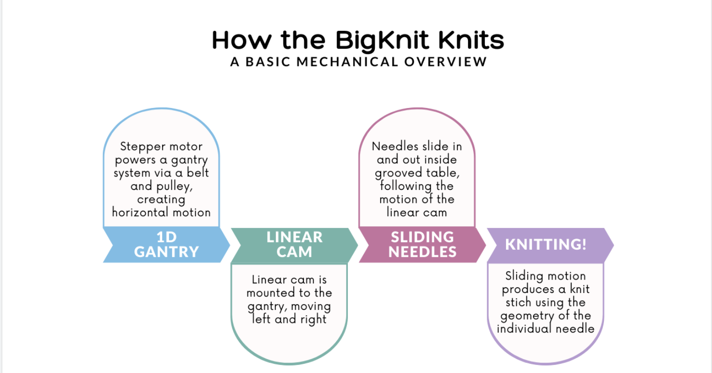
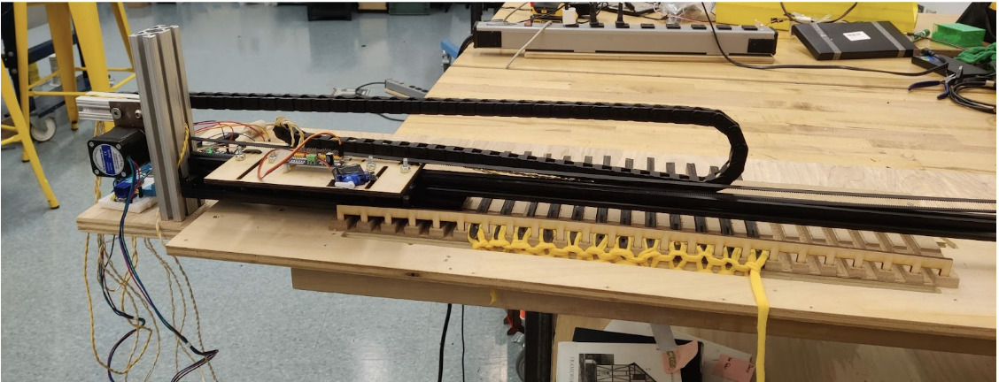
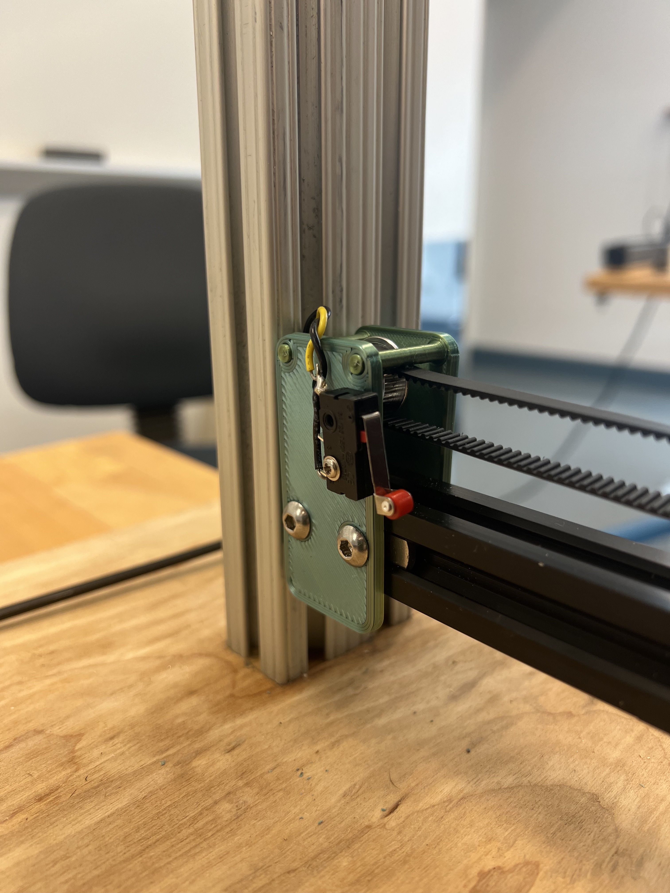
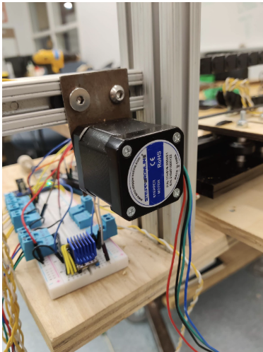
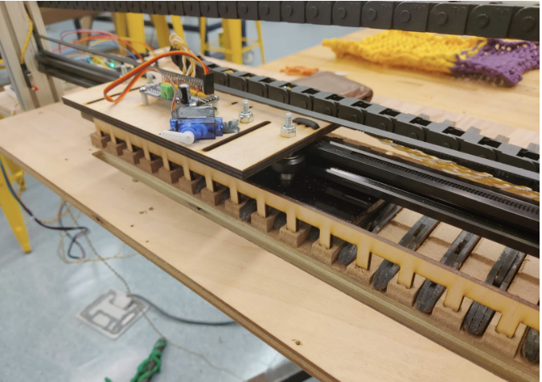
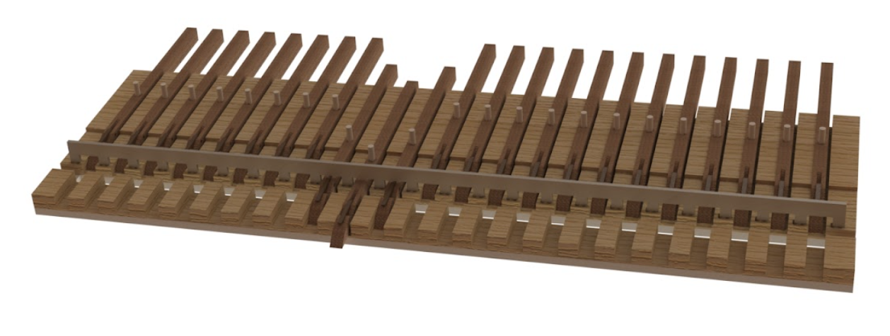

Mechanical
Without the mechanical subsystem, Big Knit would just be a stepper motor taking steps. Here's how it works!
Knitting is a mechanically complex process! We broke it down into individual components, which each moved in one specific way.
The Gantry
 The linear cam is attached to a gantry cart that moves in one dimension. The gantry cart slides along a one meter length of 8020 extrusion. Directly attached to the gantry cart is a belt and pulley system. At one end of the 8020 is a pulley attached to a stepper motor, and at the other end of the gantry is a pulley mounted to the 8020 through a custom 3D printed piece. The stepper motor is mounted to the 8020 through a custom steel sheet metal part that is directly screwed into the motor and the 8020.
Linear Cam
The linear cam converts the side-to-side motion of the gantry to an in-and-out sliding motion of the needles. The in/out travel of the cam was decided based on the length of the latch on the needles to ensure it moved far enough. Then, we decided on the width and slope of the cam based on experimentation to stop it from binding. The cam mounted onto the gantry via v slot pulleys, which helped keep it aligned and clamped down on the main rail of the linear slide. The spacing and position of the wheels was intentionally chosen in a triangle layout to distribute any twisting force on the cam as well as to be properly constrained.
Knitting Subassembly
The knitting subassembly consists of the moving needles which hold the yarn and actually produce the knit stitch, as well as the table that constrains their movement. The page [HOW TO KNIT] explains the specifics of how this movement creates a knit stitch.
The table has specifically toleranced slots which allow the needles to slide smoothly without twisting. It is machined from MDF, which was specifically chosen for its combination of sustainability and ability to have a smooth finish. Special care was taken to avoid any chips or splinters and create a smooth surface finish. There are two separate grooved pieces, with a slot between them in order to constrain the knit piece between them. This means that as the needles slide in and out, the material is held in place forcing the loops to slide as intended. In many of our demonstration photos the front piece is removed for clarity and visibility, but it is necessary for the knitting to occur successfully.